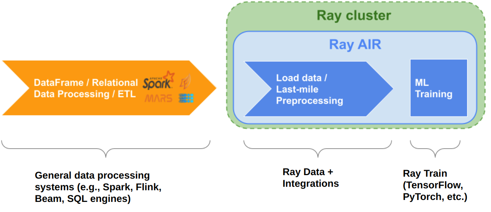

Ray Data Overview
Contents
Ray Data Overview#
Ray Data is a scalable data processing library for ML workloads, particularly suited for the following workloads:
It provides flexible and performant APIs for distributed data processing:
Simple transformations such as maps (
map_batches())Global and grouped aggregations (
groupby())Shuffling operations (
random_shuffle(),sort(),repartition()).
Ray Data is built on top of Ray, so it scales effectively to large clusters and offers scheduling support for both CPU and GPU resources. Ray Data uses streaming execution to efficiently process large datasets.
Why choose Ray Data?#
Faster and cheaper for modern deep learning applications
Ray Data is designed for deep learning applications that involve both CPU preprocessing and GPU inference. Through its powerful streaming Dataset primitive, Ray Data streams working data from CPU preprocessing tasks to GPU inferencing or training tasks, allowing you to utilize both sets of resources concurrently.
By using Ray Data, your GPUs are no longer idle during CPU computation, reducing overall cost of the batch inference job.
Cloud, framework, and data format agnostic
Ray Data has no restrictions on cloud provider, ML framework, or data format.
Through the Ray cluster launcher, you can start a Ray cluster on AWS, GCP, or Azure clouds. You can use any ML framework of your choice, including PyTorch, HuggingFace, or Tensorflow. Ray Data also does not require a particular file format, and supports a wide variety of formats including CSV, Parquet, and raw images.
Out of the box scaling
Ray Data is built on Ray, so it easily scales to many machines. Code that works on one machine also runs on a large cluster without any changes.
Python first
With Ray Data, you can express your inference job directly in Python instead of YAML or other formats, allowing for faster iterations, easier debugging, and a native developer experience.
Offline Batch Inference#
Tip
Get in touch to get help using Ray Data, the industry’s fastest and cheapest solution for offline batch inference.
Offline batch inference is a process for generating model predictions on a fixed set of input data. Ray Data offers an efficient and scalable solution for batch inference, providing faster execution and cost-effectiveness for deep learning applications. For more details on how to use Ray Data for offline batch inference, see the batch inference user guide.

How does Ray Data compare to X for offline inference?#
Batch Services: AWS Batch, GCP Batch
Cloud providers such as AWS, GCP, and Azure provide batch services to manage compute infrastructure for you. Each service uses the same process: you provide the code, and the service runs your code on each node in a cluster. However, while infrastructure management is necessary, it is often not enough. These services have limitations, such as a lack of software libraries to address optimized parallelization, efficient data transfer, and easy debugging. These solutions are suitable only for experienced users who can write their own optimized batch inference code.
Ray Data abstracts away not only the infrastructure management, but also the sharding your dataset, the parallelization of the inference over these shards, and the transfer of data from storage to CPU to GPU.
Online inference solutions: Bento ML, Sagemaker Batch Transform
Solutions like Bento ML, Sagemaker Batch Transform, or Ray Serve provide APIs to make it easy to write performant inference code and can abstract away infrastructure complexities. But they are designed for online inference rather than offline batch inference, which are two different problems with different sets of requirements. These solutions introduce additional complexity like HTTP, and cannot effectively handle large datasets leading inference service providers like Bento ML to integrating with Apache Spark for offline inference.
Ray Data is built for offline batch jobs, without all the extra complexities of starting servers or sending HTTP requests.
For a more detailed performance comparison between Ray Data and Sagemaker Batch Transform, see Offline Batch Inference: Comparing Ray, Apache Spark, and SageMaker.
Distributed Data Processing Frameworks: Apache Spark
Ray Data handles many of the same batch processing workloads as Apache Spark, but with a streaming paradigm that is better suited for GPU workloads for deep learning inference.
For a more detailed performance comarison between Ray Data and Apache Spark, see Offline Batch Inference: Comparing Ray, Apache Spark, and SageMaker.
Batch inference case studies#
Preprocessing and ingest for ML training#
Use Ray Data to load and preprocess data for distributed ML training pipelines in a streaming fashion. Ray Data serves as a last-mile bridge from storage or ETL pipeline outputs to distributed applications and libraries in Ray. Don’t use it as a replacement for more general data processing systems.
{kind=link}
How does Ray Data compare to X for ML training ingest?#
PyTorch Dataset and DataLoader
Framework-agnostic: Datasets is framework-agnostic and portable between different distributed training frameworks, while Torch datasets are specific to Torch.
No built-in IO layer: Torch datasets do not have an I/O layer for common file formats or in-memory exchange with other frameworks; users need to bring in other libraries and roll this integration themselves.
Generic distributed data processing: Datasets is more general: it can handle generic distributed operations, including global per-epoch shuffling, which would otherwise have to be implemented by stitching together two separate systems. Torch datasets would require such stitching for anything more involved than batch-based preprocessing, and does not natively support shuffling across worker shards. See our blog post on why this shared infrastructure is important for 3rd generation ML architectures.
Lower overhead: Datasets is lower overhead: it supports zero-copy exchange between processes, in contrast to the multi-processing-based pipelines of Torch datasets.
TensorFlow Dataset
Framework-agnostic: Datasets is framework-agnostic and portable between different distributed training frameworks, while TensorFlow datasets is specific to TensorFlow.
Unified single-node and distributed: Datasets unifies single and multi-node training under the same abstraction. TensorFlow datasets presents separate concepts for distributed data loading and prevents code from being seamlessly scaled to larger clusters.
Generic distributed data processing: Datasets is more general: it can handle generic distributed operations, including global per-epoch shuffling, which would otherwise have to be implemented by stitching together two separate systems. TensorFlow datasets would require such stitching for anything more involved than basic preprocessing, and does not natively support full-shuffling across worker shards; only file interleaving is supported. See our blog post on why this shared infrastructure is important for 3rd generation ML architectures.
Lower overhead: Datasets is lower overhead: it supports zero-copy exchange between processes, in contrast to the multi-processing-based pipelines of TensorFlow datasets.
Petastorm
Supported data types: Petastorm only supports Parquet data, while Ray Data supports many file formats.
Lower overhead: Datasets is lower overhead: it supports zero-copy exchange between processes, in contrast to the multi-processing-based pipelines used by Petastorm.
No data processing: Petastorm does not expose any data processing APIs.
NVTabular
Supported data types: NVTabular only supports tabular (Parquet, CSV, Avro) data, while Ray Data supports many other file formats.
Lower overhead: Datasets is lower overhead: it supports zero-copy exchange between processes, in contrast to the multi-processing-based pipelines used by Petastorm.
Heterogeneous compute: NVTabular doesn’t support mixing heterogeneous resources in dataset transforms (e.g. both CPU and GPU transformations), while Ray Data supports this.